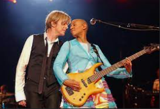

Richard Bona

Bona Penda Nya Yuma Elolo, plus connu sous le nom de Richard Bona, est un chanteur et bassiste americain d'origine
camerounaise né le 28 octobre 1967 à Minta au cameroun Il commence sa carrière en tant qu'instrumentiste à Paris, puis se
rend à New York. Il se produit et enregistre en solo depuis 1999. Plus de détails...
Serra

Éric Serra est un compositeur français, né le 9 septembre 1959 à Saint-Mandé. Il est le compositeur attitré de la musique des
films de Luc Besson depuis le début des années 1980. Nommé six fois aux César entre 1986 et 2000, Éric Serra obtient le César
de la meilleure musique de film pour Le Grand Bleu en 1989. de détails...
Gail Anne Dorsey

Gail Ann Dorsey, née le 20 novembre 1962 à Philadelphie (Pennsylvanie), est une musicienne de rock américaine, musicienne
de studio confirmée ; c'est notamment sa collaboration de 1993 à 1996 avec le groupe Tears for Fears et sa présence comme
bassiste dans le groupe de David Bowie à partir de 1995 qui l'ont véritablement révélée au grand public. Plus de détails...
Site réalisé par : franck ahouangassi
Le:04/03/2025